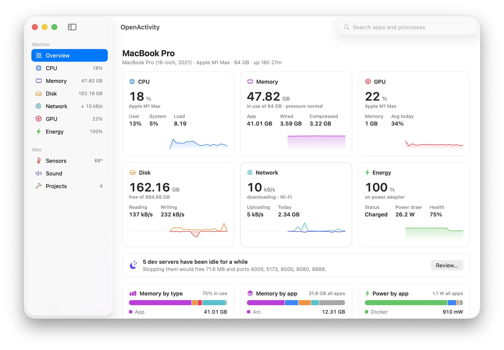
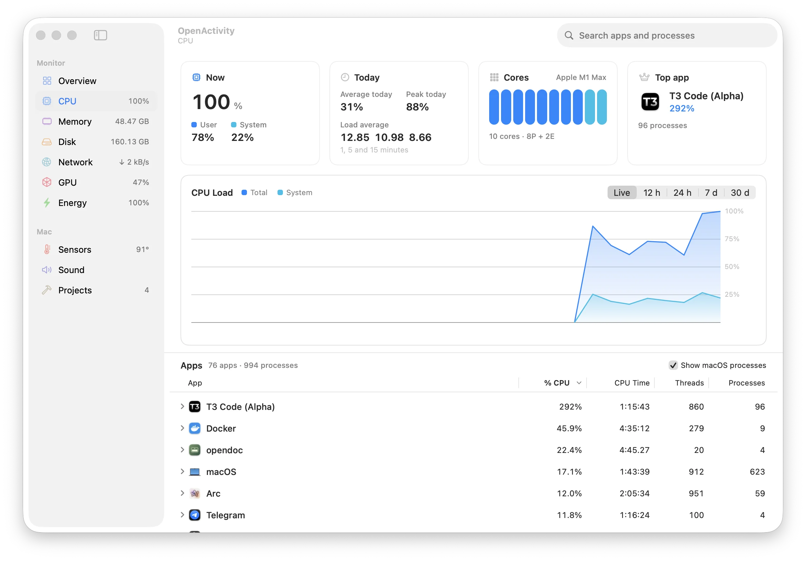

Grouped by app
Chrome’s renderers count toward Chrome. A shell and everything it runs count toward Terminal. Expand any app to see its processes, and quit either one from any list.
OpenActivity folds every helper, renderer and background service into the app that started it. Nine hundred processes become the seventy-eight apps you actually run.
Signed and notarized by Apple. No account, no analytics, nothing leaves your Mac.

One row per app, thirty days of memory, a menu bar that warns you, and the dev servers you forgot about.
Chrome’s renderers count toward Chrome. A shell and everything it runs count toward Terminal. Expand any app to see its processes, and quit either one from any list.
Every metric charted for 12 hours, 24 hours, 7 days or 30 days, with the apps that used the most.
Figures, small graphs or an icon that turns into a warning sign when your Mac is under strain.
Node, Python, Go, Ruby and Bun servers, grouped by the folder they run in, with their ports. Idle ones are flagged. Stop one, a project, or every idle server at once.
A notification when an app pins the CPU, keeps growing, hammers the disk or saturates the network. You set the thresholds.
Turn one app down or mute it without touching the others. Nothing is recorded.
CPU and GPU temperatures, fan speeds, and the battery in your AirPods, mouse and keyboard.
Screens from a MacBook Pro running OpenActivity, not mock-ups.

Load split into user and system, every core, today’s average and peak, and the apps behind it.
Recorded from the app running on a Mac: the overview filling in live, the per-app CPU table, idle dev servers stopped in one click, the alerts, and the dashboard in the menu bar.
Activity Monitor is great at this second, one process at a time. OpenActivity adds who is responsible, what happened while you were away, and when to look.
No account, no analytics, no update checks. OpenActivity doesn’t make a single network request of its own. History is one SQLite file you can delete from Settings.
OpenActivity.zip from the latest release.macOS 15 Sequoia or later. Apple silicon recommended. MIT licensed.